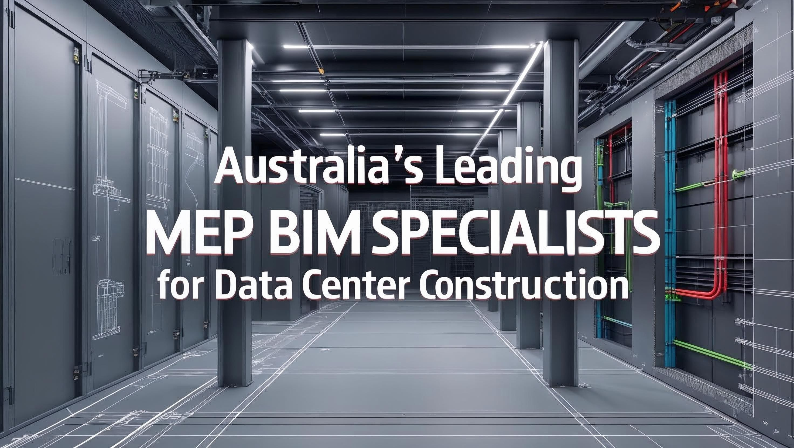

Australia's Leading MEP BIM Specialists for Data Center Construction
As the digital revolution continues to transform business and daily life, data centers have rapidly become the backbone of Australia's economy. Every time you stream a movie, conduct online banking, or access cloud-based services, data centers enable these connections behind the scenes. As more industries move toward digital platforms, reliable, resilient, and energy-efficient facilities are essential. This is where MEP BIM (Mechanical, Electrical, Plumbing, and Building Information Modeling) solutions come into play.
In this guide, we'll dig into why MEP BIM is pivotal for data center construction, explore the unique demands of these mission-critical projects, detail what makes an MEP BIM partner stand out, and introduce Australia's top five specialists—Arup, AECOM, HDR Inc., Tesla Outsourcing Services, and WSP. You'll find practical explanations, actionable tips, and valuable insights to support your data center project planning and execution.
Understanding MEP BIM in Data Center Projects
MEP BIM refers to the use of intelligent 3D modeling to plan, design, coordinate, and manage all mechanical, electrical, and plumbing systems within a building. For data centers—where even minor system failures can lead to massive disruption— B2M BIM delivers:
- Clear visualization of all building systems before construction.
- Seamless collaboration between engineers, architects, and contractors, reducing errors and saving time.
- Proactive clash detection, catch issues (like pipes crossing cables) in the digital realm instead of on the build site.
- Continuous updating throughout the building's lifecycle, ensuring efficient long-term operation.
Unique Challenges in Data Centers
Data centers differ from typical buildings in several ways:
- High-Density Power and Cooling: Servers generate intense heat and require robust electrical systems, specialized HVAC, and precise controls.
- Redundancy and Uptime: Systems need to keep running 24/7, with backups for power and cooling to prevent downtime.
- Rapid Growth: As data needs expand, facilities must be flexible and scalable.
- Stringent Regulations: Facilities must comply with both Australian and international standards for safety, security, and energy use.
Meeting these challenges means every duct, pipe, and cable must work together flawlessly, making MEP BIM an absolute necessity.
Criteria for Selecting Australia's Top MEP BIM Specialists
When choosing a specialist for data center projects in Australia, look for the following attributes:
- Proven Data Center Experience in Australia and APAC: A history of successful, local project delivery ensures an understanding of unique climate, regulatory, and market conditions.
- Mastery of Key BIM Platforms: Proficiency in tools such as Revit, Navisworks, iTwin, and ProjectWise is critical for project accuracy and efficiency.
- Modularity and Scalability: The ability to design for expansion and adaptability as IT needs evolve.
- Sustainability and Resilience: Demonstrated commitment to energy efficiency, renewable integration, and operational reliability.
- Collaborative Approach: Effective communication between multidisciplinary teams to meet rigorous technical demands.
Top 5 MEP BIM Services Provider in Australia
1. Arup
Arup is globally recognized for engineering innovation and has built a strong presence in the Australian data center market. With a portfolio spanning some of the most significant data infrastructure in Asia-Pacific, Arup's teams stand out for their integrated approach, blending sustainability, digital modeling, and practical problem-solving.
Strengths:
- Deep expertise in large-scale, high-capacity digital infrastructure projects.
- Pioneering use of BIM-for-FM (Facilities Management) for lifecycle operations.
- Prioritizes environmentally responsible solutions, like energy reuse and water-saving HVAC systems.
- Collaborative culture ensures seamless interaction with clients, contractors, and technology vendors.
2. AECOM
AECOM is a multidisciplinary powerhouse, known for delivering some of the region's most complex data centers. Their strategy combines cutting-edge Virtual Design and Construction (VDC) with BIM integration to speed up project timelines and ensure regulatory compliance.
Strengths:
- Leader in fast-track data center builds using digital twins and real-time project tracking.
- Customizes solutions to support high-density electrical loads and specialized cooling.
- Strong focus on disaster resilience—crucial for mission-critical operations.
- Experience with hyperscale centers and colocation facilities across Australia.
3. HDR Inc.
HDR Inc. brings a global mindset to Australian projects, offering advanced generative and computational design through BIM for highly adaptable, client-centered data centers.
Strengths:
- Experience in delivering hyperscale and edge data centers, especially for cloud service providers.
- Applies advanced energy and sustainability modeling to maximize efficiency and minimize carbon footprints.
- Innovates with urban integration—helping data centers coexist seamlessly within cities.
- Recognized for stakeholder engagement and value-added BIM design workshops.
4. Tesla Outsourcing Services
Tesla Outsourcing Services is an internationally trusted BIM and MEP provider making great strides in the Australian market. They combine technical detail with cost-effectiveness and quick turnaround, ideal for projects that demand precision and flexibility.
Strengths:
- Provides detailed MEP BIM models, shop drawings, and coordination for technically complex installations.
- Specializes in clash detection and rapid issue resolution, reducing on-site construction risks.
- Adapts to varying scales—from modular, prefabricated builds to vast server campuses.
- Committed to transparency and up-to-date compliance with Australian standards.
5. WSP
WSP is a top-tier Australian engineering firm at the cutting edge of digital twin integration and BIM-heavy delivery models. Their team is known for data-centric workflows and future-proofed design strategies.
Strengths:
- Experienced in modular data center construction with leading BIM solutions.
- Experts in applying digital engineering tools to streamline project delivery and lifecycle management.
- Focused on resilient, energy-efficient facilities for both cloud and enterprise clients.
- Strong involvement with smart city and infrastructure projects, giving them key insights into the role of data centers in evolving urban landscapes.
Key Services & Innovations from These MEP BIM Specialists
- Full-Spectrum MEP BIM Modeling and Coordination: Intelligent 3D modeling for all mechanical, electrical, and plumbing systems, supporting seamless design and fabrication.
- Digital Clash Detection and Resolution: Using BIM to spot design conflicts early, saving money and time during construction.
- Lifecycle Management and Digital Twin Integration: Ensuring that the BIM model remains a live asset, helping operators monitor and maintain facilities for years to come.
- Energy Efficiency and Sustainability Modeling: Simulation of facility operations to optimize power usage, water conservation, and cooling strategies.
- Fast-Track Delivery and Ongoing Operations Support: Modular and prefabrication solutions, plus robust documentation for smoother upgrades and expansions.
Practical Tips for Clients
Assess Local Experience and Compliance:
Ask each company for evidence of delivering data center projects meeting Australian codes (like NCC and AS/NZS standards) and expertise with local utilities policies.
Clarify BIM Execution Plans:
Request transparent execution strategies, how will BIM be used at each project phase? How will issue tracking, clash detection, and information sharing be handled?
Emphasize Flexibility and Scalability:
Select partners demonstrating adaptability, with experience in both hyperscale data centers and smaller, modular facilities.
Evaluate Digital and Sustainability Credentials:
Prioritize firms with a history of low PUE (Power Usage Effectiveness) design, documented digital handover capabilities, and integration with renewable energy.
Insist on Workflow Transparency:
Demand regular updates, access to federated BIM models, and clarity on who is responsible for data at all stages of the project.
Conclusion
Advanced MEP BIM systems are now the standard for designing, building, and operating high-performance data centers. Arup, AECOM, HDR Inc., Tesla Outsourcing Services, and WSP have earned their reputation by delivering reliable, innovative, and sustainable solutions tailored for Australia's unique market.
Choosing the right MEP BIM partner is about more than just technical skill—it's about collaboration, forward-thinking design, and a shared commitment to uptime, energy efficiency, and long-term value. As digital transformation accelerates, these companies will continue to drive operational resilience and investment protection for Australia's data-driven future.